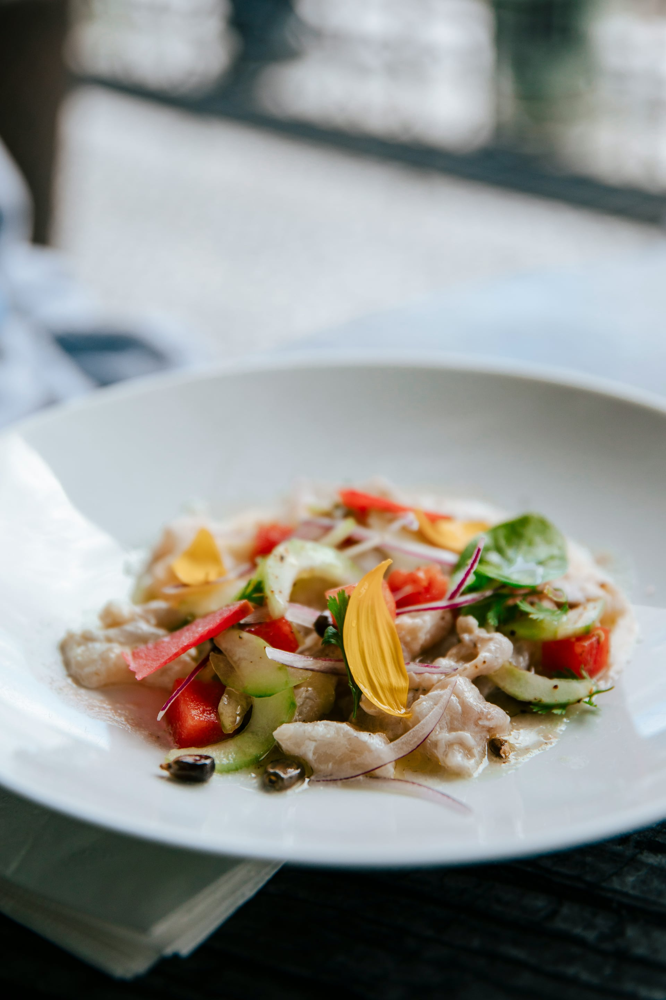
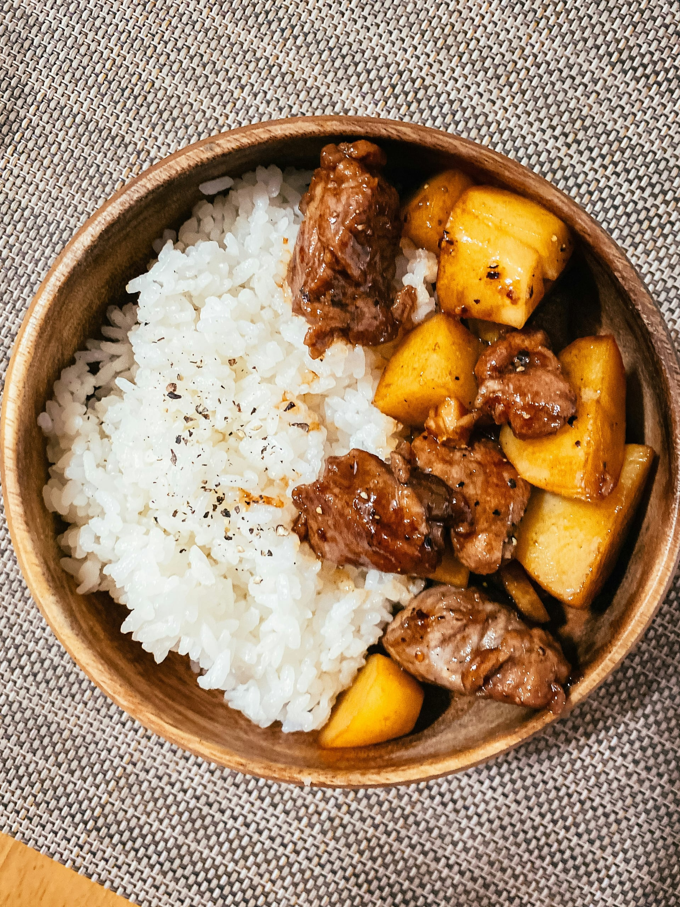
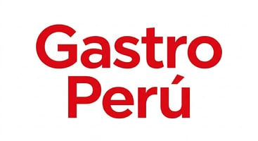

Galería
Descubre las mejores recetas de la gastronomía peruana a través de esta galería de imágenes
Optimización de imágenes - Diferente tamaño

Optimización de imágenes - Diferente resolución

Art Direction - Diferente recorte según dispositivo
